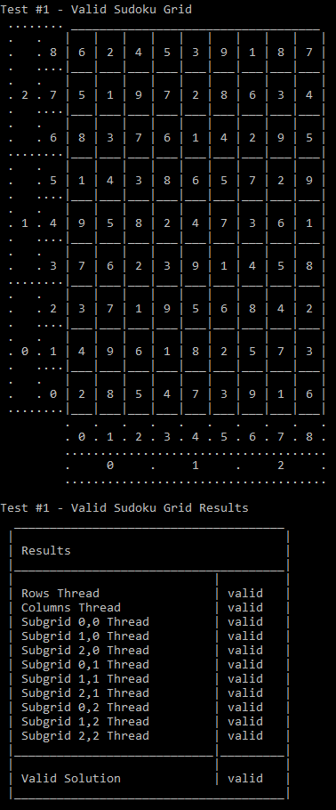

A tool to verify a sudoku solution using multithreading built using C++.
This project was made for CS421 - Operating System Design at CSU East Bay.
The program works by creating eleven threads. One thread verifies that the rows
are correct while another verifies that the columns are correct. The remaining nine
threads verifiy that each sub grid is correct.